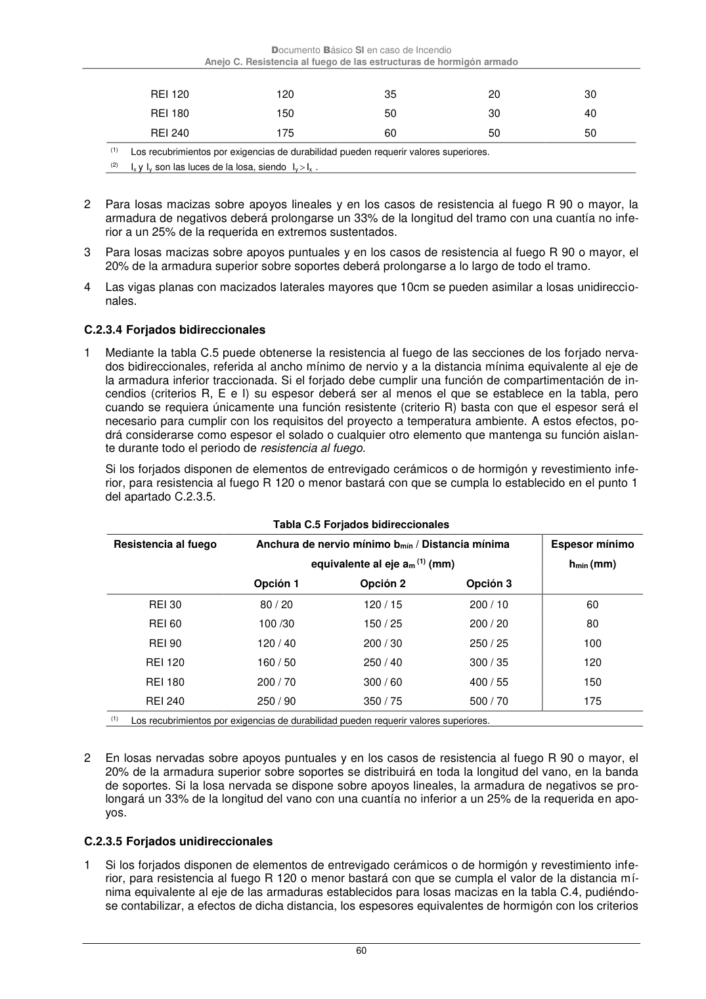

DB-SI Seguridad en caso de incendio · edición 2025-03-04 · capa oficial
Documento DB-SI-oficial · SHA-256 del PDF 0a2e78cd62471d9cc5cfe2efbc6aa39fdbad73c124aea7b039f9de96c141e105
Copia fiel del PDF fuente · Fuente oficial
Ficha de la disposición en la fuente oficial
Formatos: JSON del segmento · Markdown
Anejo C. Resistencia al fuego de las estructuras de hormigón armado 60 REI 120 120 35 20 30 REI 180 150 50 30 40 REI 240 175 60 50 50 (1) Los recubrimientos por exigencias de durabilidad pueden requerir valores superiores. (2) IxyIyson las luces de la losa, siendo Iy Ix. 2 Para losas macizas sobre apoyos lineales y en los casos de resistencia al fuego R 90 o mayor, la armadura de negativos deberá prolongarse un 33% de la longitud del tramo con una cuantía no infe- rior a un 25% de la requerida en extremos sustentados. 3 Para losas macizas sobre apoyos puntuales y en los casos de resistencia al fuego R 90 o mayor, el 20% de la armadura superior sobre soportes deberá prolongarse a lo largo de todo el tramo. 4 Las vigas planas con macizados laterales mayores que 10cm se pueden asimilar a losas unidireccio- nales. C.2.3.4 Forjados bidireccionales 1 Mediante la tabla C.5 puede obtenerse la resistencia al fuego de las secciones de los forjado nerva- dos bidireccionales, referida al ancho mínimo de nervio y a la distancia mínima equivalente al eje de la armadura inferior traccionada. Si el forjado debe cumplir una función de compartimentación de in- cendios (criterios R, E e I) su espesor deberá ser al menos el que se establece en la tabla, pero cuando se requiera únicamente una función resistente (criterio R) basta con que el espesor será el necesario para cumplir con los requisitos del proyecto a temperatura ambiente. A estos efectos, po- drá considerarse como espesor el solado o cualquier otro elemento que mantenga su función aislan- te durante todo el periodo de resistencia al fuego. Si los forjados disponen de elementos de entrevigado cerámicos o de hormigón y revestimiento infe- rior, para resistencia al fuego R 120 o menor bastará con que se cumpla lo establecido en el punto 1 del apartado C.2.3.5. Tabla C.5 Forjados bidireccionales Resistencia al fuego Anchura de nervio mínimo bmín / Distancia mínima equivalente al eje am (1) (mm) Espesor mínimo hmin (mm) Opción 1 Opción 2 Opción 3 REI 30 80 / 20 120 / 15 200 / 10 60 REI 60 100 /30 150 / 25 200 / 20 80 REI 90 120 / 40 200 / 30 250 / 25 100 REI 120 160 / 50 250 / 40 300 / 35 120 REI 180 200 / 70 300 / 60 400 / 55 150 REI 240 250 / 90 350 / 75 500 / 70 175 (1) Los recubrimientos por exigencias de durabilidad pueden requerir valores superiores. 2 En losas nervadas sobre apoyos puntuales y en los casos de resistencia al fuego R 90 o mayor, el 20% de la armadura superior sobre soportes se distribuirá en toda la longitud del vano, en la banda de soportes. Si la losa nervada se dispone sobre apoyos lineales, la armadura de negativos se pro- longará un 33% de la longitud del vano con una cuantía no inferior a un 25% de la requerida en apo- yos. C.2.3.5 Forjados unidireccionales 1 Si los forjados disponen de elementos de entrevigado cerámicos o de hormigón y revestimiento infe- rior, para resistencia al fuego R 120 o menor bastará con que se cumpla el valor de la distancia mí- nima equivalente al eje de las armaduras establecidos para losas macizas en la tabla C.4, pudiéndo- se contabilizar, a efectos de dicha distancia, los espesores equivalentes de hormigón con los criterios
